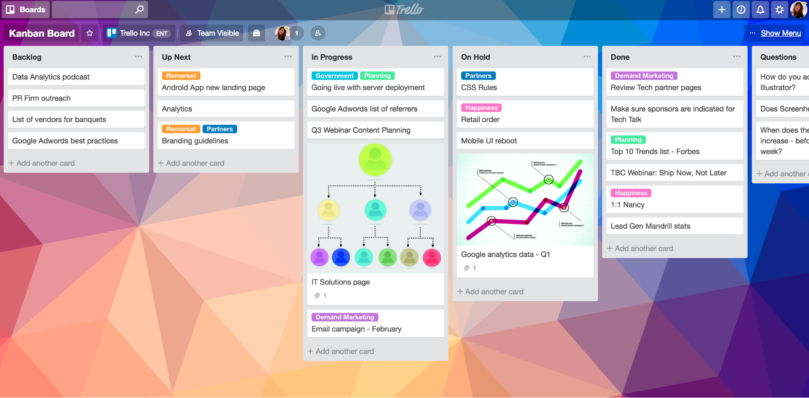

Week 4: Small-team Project Management#
Studio Abstract#
In this studio, we will investigate effective task management and planning for small teams (3-5 people). We will also look at setting up Trello and how to set up tasks and notifications.
We will address the following activities and exercises in studio 3.
Basics of managing a small-team project
Setting up Trello
How to create tasks
How to set up notifications
Trello Start-up Activity
Effective Small-Team Planning#
⏱️ 15 minutes - Group
Devices closed for this exercise
Managing yourself is challenging enough, but imagine if each limb was its own person and the only way to control them is through an itemised daily schedule. Welcome to team planning.
In this studio, we’ll look at a simple but effective model of project planning for small teams, such as yours, and a tool, called Trello for managing your team.

Fig. 30 Teamwork!#
In this course we recommend the use of Trello, a free to use team scheduling and planning application, but there are many other suitable tools.
Trello is a web-based, Kanban-style, list-making application developed originally by Fog Creek Software and later acquired by Atlassian. Trello can be used to create task boards with different columns and move the tasks between them. Typically columns include task statuses such as To Do, In Progress, and Done. The tool can be used for personal and business purposes including real estate management, software project management, school bulleting boards, accounting, web design, gaming and law office case management.
Managing a small team: Who Does What By When#
The model of who does what by when is a simplified project management model, proposed by Manager Tools owner Mark Horstman. He agrees it is over-simplified, but the who, what, when trilogy is the most important three parts of project management.
All projects are completed by completing a series of tasks. It is difficult to know up front what all of those tasks will be. As a result, project management is a discipline in itself. For large-scale projects, even in the software industry, we may need multiple people to manage different parts of a project, and that could require using sophisticated project management tools, overview charts, etc.
But for projects with small teams of about 5 or less people, such sophistication is usually not necessary.
Further, all tasks are completed by people who are on the project. And people’s behaviour is often driven by deadlines.
So, during a small-team project, we just need to know three things: who does what by when.
No budget, no critical path, and no lengthy reporting. Note that budget IS important, but in small-team projects, especially start-ups, we see that: (a) budget is almost entirely taken up by the cost of people, so focus on people and the budget takes care of itself; and (b) budget is typically so front of mind that it does not need managing like our time.
Who#
People do tasks on projects. Tasks don’t get done without people. Great project managers know who is in the project and what they are doing.
As a team, we need to know who is completing each task so we can discuss with them, ask questions, follow up, and, ultimately, hold them accountable.
For each task on a project, ONE person should be assigned to do that, and that person is accountable for ensuring it is completed on time. If you see a task that requires more than one person, break it into smaller tasks (see more in the next step below).
Tips on defining who:
Each task should have one person responsible. If we have more than one, break it into smaller tasks.
Hold people accountable for completing tasks.
Does what#
Tasks are what make up a project. No project gets done if its constituent tasks are not done.
It is important to identify the tasks that need to be done in a project. We shouldn’t identify every task at the start of the project. This is a waste of time, especially in software projects, and doubly for innovation projects. Things change! Instead, we should have a high-level idea of where the project is going, and have clear tasks identified for the next 1-2 weeks.
Some tips on defining tasks:
Each task should be measurable. That is, it should be easy to tell whether it is done or not. For example, “Think about customer interview format” is not measurable because you can’t see my thinking. “Send draft interview questions to person X” is measurable, because it is clear whether I have sent it to X or not.
Make reporting part of the task. It is great when tasks are finished. It is much better when others in the team know that tasks are finished, especially if they are waiting on them. As part of a task, make reporting part of the task; e.g. “Check user story 7 into the repository and report this to person X”.
By when#
People hate deadlines. Actually, people hate having deadlines, but like other people sticking to their own deadlines. The fact is, deadlines drive behaviour. If university courses didn’t have deadlines, would you still submit all your work by the end of the semester?
Some tips on deadlines:
Make tasks that require no more than 5 working days; even less for most tasks. A week is about as far ahead as we tend to think. For example, if a task will take about 6 weeks, it is certain that there are smaller sub-tasks that can be done. “Conduct 70 customer interviews” could start with “Define customer interview questions”, then “Ask person X to check questions”, then “Interview first 5 customers to validate questions”, etc.
Make deadlines specific. For example, not “Next week” or even “Thursday 27th”, but “1pm on Thursday 27th”.
Shorter deadlines are often more effective. The famous Parkinson’s law is “work expands as to fill the time available for its completion”, which means: the more time we give people/ourselves, the longer we take. People will resist shorter deadlines, but seem to respond well to them. Longer deadlines do not drive behaviour. So keep deadlines short, but not so short that quality is affected.
Update the deadline if it is missed. We all miss deadlines sometimes. In such a case, don’t just say “Ok, please submit it soon” – assign a new deadline immediately: “Ok, thanks for letting us know. Can you please get it to us by 1pm on Thursday?”
Summary#
Basic team management planning means knowing:
Who is doing each task.
One person per task.
Hold people to account.
What each task is.
Make tasks measurable.
Make reporting part of the tasks.
When each tasks is due.
Five working days maximum.
Make deadlines specific.
Shorter deadlines drive behaviour.
Update deadline if missed.
Task planning exercises#
⏱️ 15 minutes - Group
Devices closed for this exercise
As a team, get together, brainstorm, and write down ALL of the tasks that you can think of for your team for the coming two weeks. (Hint: look at the course schedule).
Think about things to do with setup, project work, even scheduling meetings.
For each one, write down: who does what by when.
Your legends will be working with you to give feedback on your task breakdown.
Trello Setup#
⏱️ 30 minutes - Group
Devices open for this exercise
As noted, we encourage the use of Trello in this course. It allows us to define tasks, assign them to people, and give them due dates: who does what by when!.
To create a Trello board, you need to visit the Trello website and sign-up. Use the ‘Get Trello for free’ button in the top left corner to get started.

Once you have created your account, either manually or through a linked account, use the following tutorials to learn how to use Trello.
Trello boards, lists, and cards#
How to Create a Trello Board#
üåê https://support.atlassian.com/trello/docs/creating-a-new-board/
How to Create a Trello project#
How to Add Team Members to Your Trello Boards#
Due Date Notifications in Trello#
You will need to setup notifications in Trello to your chosen device (Android or IPhone) for things like schedule updates, milestones and deadlines. Use the following link to learn how to add due dates:
üåê https://support.atlassian.com/trello/docs/adding-dates-to-cards/
And how to setup notifications for due dates:
üåê https://support.atlassian.com/trello/docs/receiving-trello-notifications/
Additional Resources#
More tutorial videos can be found at Trello’s official YouTube channel or their official online guide.
Take a break#
⏱️ 10 minutes
Trello Exercise#
⏱️ 30 Minutes - Group
Now that you have become somewhat familiar with Trello, with your group try to complete the following tasks to prepare your Trello board for the course:
üí° Remember to delegate tasks between team members for efficient use of your time. Multiple team members can work on different tasks at the same time.
Add all team members to your Trello board.
Create at least three Trello boards for your project: Upcoming tasks, In-progress tasks, and Done tasks (or choose your own if you want).
Change your Trello board background to something that represents your team.
To your Trello, add all of the tasks that you identified in the earlier exercise.
Create at least one Trello automation (Button, Due Date or Rule).
Once all these tasks have been completed, signal to a Legend and show them your board.
Reflection#
⏱️ 10 Minutes - Class
Devices closed for this exercise
Now that you have completed this, reflect on the following with the class:
What is one key thing you will take away from this studio for your project and why?
In what ways did this studio change your understanding of managing team dynamics?
Have you used Trello or any other tools similar to Trello? If so, share your experience with the class.
Bonus: It’s dangerous to go alone! Take this.#
⏱️ ∞